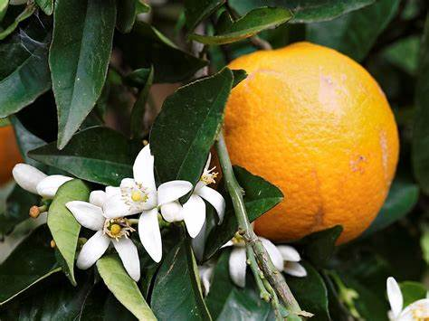
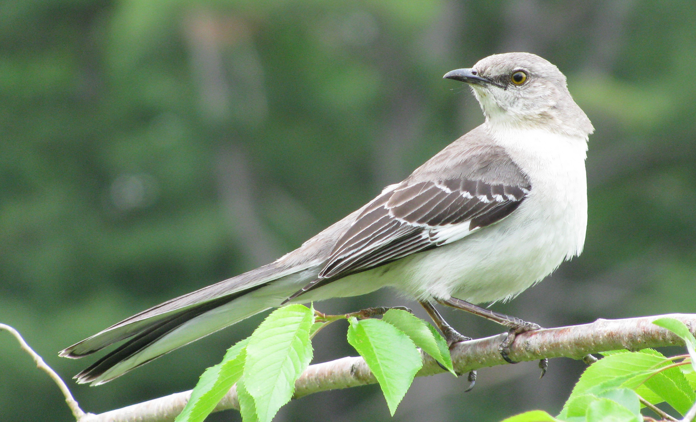
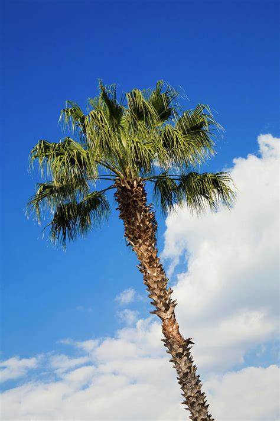

Florida, which joined the union as the 27th state in 1845, is nicknamed the Sunshine State and known for its balmy climate and natural beauty. Spanish explorer Juan Ponce de Leon, who led the first European expedition to Florida in 1513, named the state in tribute to Spain’s Easter celebration known as “Pascua Florida,” or Feast of Flowers. During the first half of the 1800s, U.S. troops waged war with the region’s Native American population. During the Civil War, Florida was the third state to secede from the Union. Beginning in the late 19th century, residents of Northern states flocked to Florida to escape harsh winters. In the 20th century, tourism became Florida’s leading industry and remains so today, attracting millions of visitors annually. Florida is also known for its oranges and grapefruit, and some 80 percent of America’s citrus is grown there.
| Date of Statehood | Capital | Population | Size |
|---|---|---|---|
| March 3, 1845 | Tallahassee | 21.57 million | 65,758 square miles |
In God We Trust
Orange Blossom
Mockingbird
Sabal Palm
Interesting facts